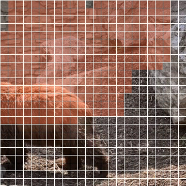
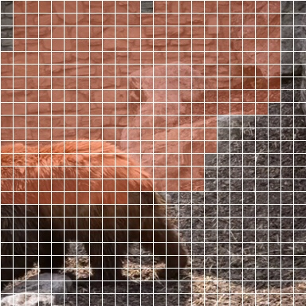
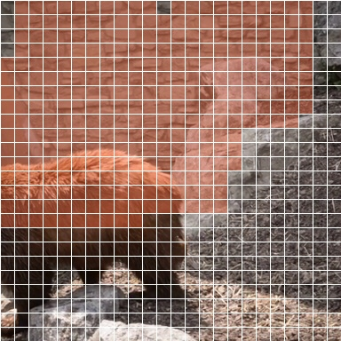
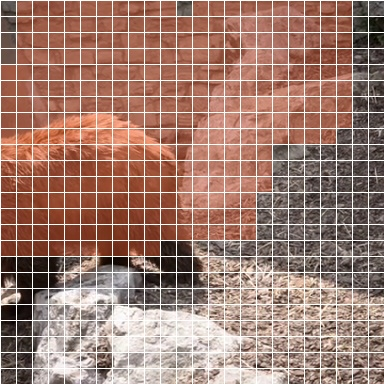
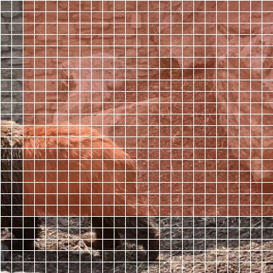
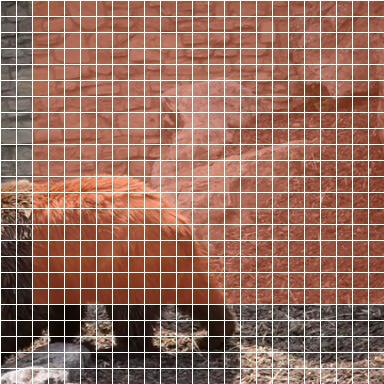
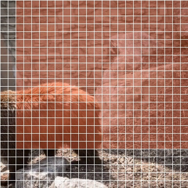
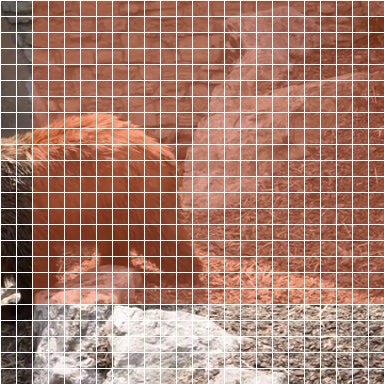

V-JEPA 2 训练流程可视化
这个页面把 V-JEPA 2 标准训练线可视化成可读流程：从输入视频、训练预处理、mask 采样、encoder/target encoder/predictor 的变量 shape，到最终 loss 对齐位置，全部落成一个本地页面。
训练主流程
[1, 3, 64, 384, 384][1, 18432, 1408][1, K_enc, 1408][1, K_pred, 1408]loss 不是像素重建，而是把 predictor 输出的 masked latent，和 target_encoder 在同位置的 latent 做对齐。
源码两行的细化流程
def forward_context(c):
z = encoder(c, masks_enc)
z = predictor(z, masks_enc, masks_pred)
return z
这是 [`app/vjepa/train.py`](/home/gaoya/Code_Video/WAN_2p2/vjepa2-main/app/vjepa/train.py#L435) 里的原始训练代码。这里的 encoder 和 predictor 都带了 wrapper，因此真实输入输出首先是嵌套 list，然后才可以落到单个 mask 的简化 tensor shape。
第一行：z = encoder(c, masks_enc)
含义：每个 clip 先被切成完整 token 序列 [B, 18432, 1408]，再按 masks_enc 只保留可见 token。对于当前页面展示的 mask_0，单视频时简化成 [1, 3, 64, 384, 384] -> [1, 5824, 1408]。
第二行：z = predictor(z, masks_enc, masks_pred)
含义：predictor 知道可见 token 原来在什么位置，也知道哪些位置被遮住了要补出来。它会把 context token 映射到 predictor 维度，再造出对应数量的 mask token，占位后拼回完整序列，最后只返回 target 部分的预测结果。
[1, 3, 64, 384, 384][1, 18432, 1408]，再按 masks_enc 保留可见 token。[1, K_enc, 1408]mask_0 是 K_enc=5824。这就是 context token。[1, K_enc, 384] + [1, K_pred, 384]mask_0 里 K_pred=12608，拼完会回到完整 token 数。[1, K_pred, 1408]为什么 predictor 知道要预测多少个 token
不是从 [1, 5824, 1408] 这个 shape 猜出来的，而是直接从 masks_pred 得知。比如当前 mask_0 里，masks_pred.shape = [1, 12608]，所以 predictor 会生成 12608 个 mask token，占据这些目标位置。
loss 比较的两边是什么
target encoder 先看完整 clip，得到 [1, 18432, 1408]，再按 masks_pred 取出同位置 token。训练时比较的是两个 latent 表征，不是比较像素。
训练预处理 Shape
| 变量 | Shape | DType | 中文解释 |
|---|---|---|---|
| sampled_frames | [64, 480, 854, 3] | uint8 | 等间隔采样后的原始视频帧，格式是 [T, H, W, C]。 |
| tchw | [64, 3, 480, 854] | uint8 | 转成 PyTorch 视频张量 [T, C, H, W]。 |
| resize_short_side | [64, 3, 438, 779] | float32 | 短边缩放到 438，保持宽高比。 |
| center_crop | [64, 3, 384, 384] | float32 | 中心裁剪成 384x384。 |
| rescale_0_1 | [64, 3, 384, 384] | float32 | 像素缩放到 0-1。 |
| normalize | [64, 3, 384, 384] | float32 | 按 ImageNet mean/std 归一化。 |
| to_bcthw | [1, 3, 64, 384, 384] | float32 | 整理成训练时输入 encoder 的 [B, C, T, H, W]。 |
采样帧预览
这些帧来自本次训练可视化实际使用的 64 帧采样序列。页面右下的 mask 叠加视频是在中心裁剪后的训练输入帧上生成的。
Patch / Token / Block 示意
1. 单帧 Patch 网格
训练输入每一帧是 384 x 384，而 patch_size = 16，所以一帧会被切成 24 x 24 = 576 个空间 patch。
384 px frame ┌──────────────────────────────┐ │[][][][][][][][][][][][][][][]│ │[][][][][][][][][][][][][][][]│ │[][][][][][][][][][][][][][][]│ 24 x 24 cells │............ each cell .......│ each cell = 16 x 16 pixels │[][][][][][][][][][][][][][][]│ └──────────────────────────────┘
2. 视频 Token 网格
tubelet_size = 2，所以 64 帧会先变成 32 个时间片。整个视频 token 网格是 32 x 24 x 24。
time depth = 32 slice t=0 : 24 x 24 patches slice t=1 : 24 x 24 patches ... slice t=31 : 24 x 24 patches total tokens = 32 x 24 x 24 = 18432
3. “覆盖整个时间维”
配置里 temporal_scale = 1.0，意味着一个 mask block 的时间长度 t = 32，也就是从视频开头一直延伸到结尾，不只是盖住几帧。
time axis 0 ─────────────────────────── 31 ██████████████████████████████ same spatial area repeats through all time slices
4. “空间覆盖 15% 面积”
配置里 spatial_scale = 0.15，是相对单帧 patch 网格面积来说的。单帧有 24 x 24 = 576 个 patch 位置，15% 约等于 86 个 patch。
single frame patch map: 24 x 24 = 576 cells masked spatial area per block ≈ 576 x 0.15 ≈ 86 cells possible rectangle examples: 8 x 11 = 88 9 x 10 = 90 7 x 12 = 84
所以一个 “mask block” 不是一个像素块，而是视频 token 网格里的一个三维长方体区域：t x h x w。在当前配置下，它大致是 “时间贯穿 32 层，空间每层盖住约 86 个 patch 位置”。
Mask 与变量 Shape
下面每张卡片对应配置里的一个 mask generator。当前配置有两种 mask：一种是很多个小块，另一种是少量大块。它们都会在同一个训练 step 里产生一个 predictor 输出，并各自参与 loss。
mask_0
被预测 token: 9632，可见 context token: 8800，mask 比例: 52.26%
encoder(clips, masks_enc) -> [1, 8800, 1408]predictor_embed(context) -> [1, 8800, 384]mask tokens -> [1, 9632, 384]concat + sort -> [1, 18432, 384]predictor output -> [1, 9632, 1408]target masked -> [1, 9632, 1408]



{
"aspect_ratio": [
0.75,
1.5
],
"full_complement": false,
"max_keep": null,
"max_temporal_keep": 1.0,
"num_blocks": 8,
"spatial_scale": [
0.15,
0.15
],
"temporal_scale": [
1.0,
1.0
]
}
mask_1
被预测 token: 13376，可见 context token: 5056，mask 比例: 72.57%
encoder(clips, masks_enc) -> [1, 5056, 1408]predictor_embed(context) -> [1, 5056, 384]mask tokens -> [1, 13376, 384]concat + sort -> [1, 18432, 384]predictor output -> [1, 13376, 1408]target masked -> [1, 13376, 1408]



{
"aspect_ratio": [
0.75,
1.5
],
"full_complement": false,
"max_keep": null,
"max_temporal_keep": 1.0,
"num_blocks": 2,
"spatial_scale": [
0.7,
0.7
],
"temporal_scale": [
1.0,
1.0
]
}